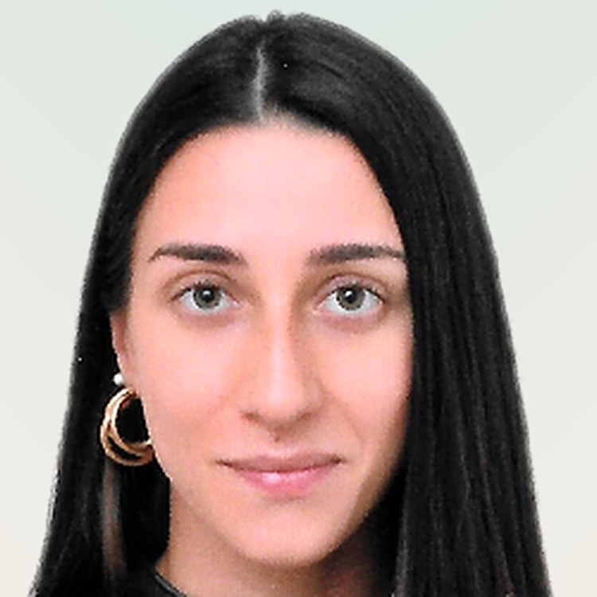

Gravidanza e post partum
Sostegno psicologico durante l'attesa e dopo la nascita: ansia, tristezza, stanchezza, dubbi su di sé e sul legame con il bambino.
Psicologa · Catania, Palermo e online
Uno spazio in cui fermarsi, ascoltarsi e capire da dove ripartire, a partire dai primi passi della genitorialità.
Chi sono

Sono psicologa clinica e mi occupo di perinatalità: affianco donne, uomini e coppie nel tempo della gravidanza, della nascita e dei primi mesi con un figlio. Credo in un lavoro fatto di ascolto, tempo e relazione, in cui ogni persona possa sentirsi accolta senza giudizio. Unisco la pratica clinica alla ricerca universitaria, perché ciò che si studia deve tornare utile a chi sta vivendo quel momento.
Di cosa mi occupo
Sostegno psicologico durante l'attesa e dopo la nascita: ansia, tristezza, stanchezza, dubbi su di sé e sul legame con il bambino.
Un aiuto per vivere il passaggio a madre o padre, con attenzione alla coppia e al ruolo dei papà, spesso dimenticati.
Incontri di accompagnamento alla nascita e gruppi di sostegno, per condividere dubbi e risorse con chi vive lo stesso momento.
Colloqui individuali per chi attraversa momenti di fatica, stress o cambiamento e desidera uno spazio sicuro per parlarne.
Come lavoro
Per telefono, WhatsApp o email, come preferisci.
Ci conosciamo e capiamo insieme di cosa hai bisogno.
Definiamo obiettivi, tempi e modalità, senza fretta.
Il percorso si adatta a te e può cambiare strada se serve.
Il mio percorso
Università degli Studi di Catania · 110 e lode
Università degli Studi di Palermo · 110 e lode
Regione Siciliana · Sezione A · n. 11271
Scuola di Formazione in Psicoterapia ad Indirizzo Dinamico (SFPID), Bologna · in corso
Università degli Studi di Palermo · ricerca sulla perinatalità, con un periodo all'estero alla TU di Dresda
Ospedale ARNAS Civico-Benfratelli e Università di Palermo · conduzione degli incontri di gruppo per futuri genitori
Sapienza Università di Roma · intervento clinico per la genitorialità a rischio nella perinatalità
Università degli Studi di Palermo · informazione, screening e prevenzione del disagio psichico in gravidanza e della depressione post partum
Ricerca
Una selezione dei lavori pubblicati. Ogni titolo apre l'articolo originale.
Dove ricevo
Corso Italia, 298
Apri la mappa →Via E. Notarbartolo, 23
Apri la mappa →Colloqui a distanza, da dove ti trovi.
Scrivimi per i dettagliContatti
Scrivimi o chiamami: ti rispondo appena possibile e fissiamo un primo colloquio.